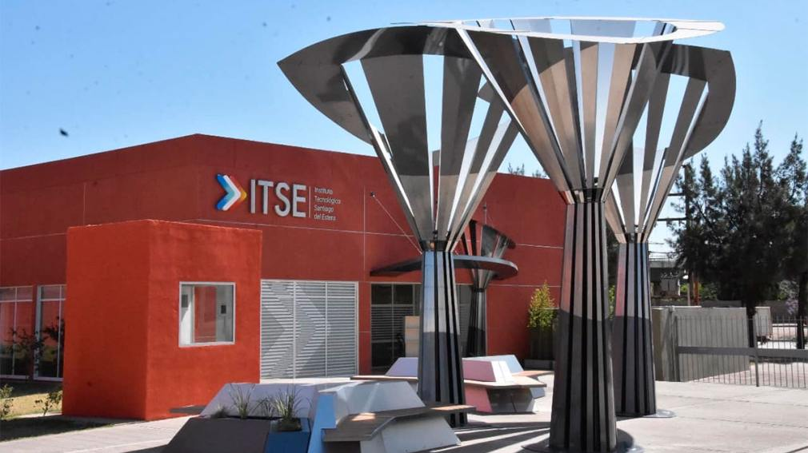

El ITSE abre la preinscripción para la Licenciatura en Sistemas
28/09/2024 - LOCALES
El Instituto Tecnológico de Santiago del Estero, dependiente del Ministerio de Educación, Ciencia y Tecnología de la Provincia, lanzó su oferta para el Ciclo Lectivo 2024, totalmente gratuita, con el llamado a preinscripción para la carrera de Lic. en Sistemas de Información.
Poder inscribirte on-line o visitiar la cede central
Mapa del sitio: